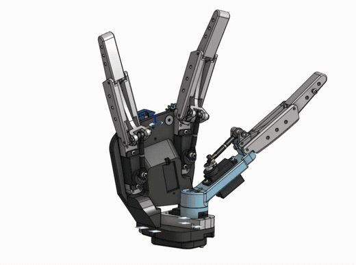

LaMain
An open-source three-finger hand for the SO-101 arm, designed with Julien Navet. It stays under 200 grams so the arm can still lift objects, and it carries touch sensors on the fingertips.
The goal is to train robot learning models with touch, from imitation learning to vision-language-action models.
Read the full sheet